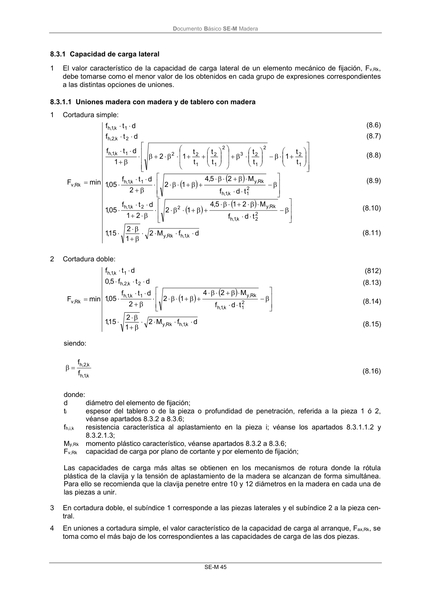

DB-SE-M Madera · edición 2019-12-20 · capa oficial
Documento DB-SE-M-oficial · SHA-256 del PDF 26b5819839ebfda78b0b119c5e76a0a37773b0d763c05688541870075df93718
Página física 51 de 132.
Copia fiel del PDF fuente · Fuente oficial
Ficha de la disposición en la fuente oficial
Formato: Texto de la página (Markdown)
Documento Básico SE-M Madera SE-M 45 8.3.1 Capacidad de carga lateral 1 El valor característico de la capacidad de carga lateral de un elemento mecánico de fijación, Fv,Rk, debe tomarse como el menor valor de los obtenidos en cada grupo de expresiones correspondientes a las distintas opciones de uniones. 8.3.1.1 Uniones madera con madera y de tablero con madera 1 Cortadura simple: d f M 2 1 2 15 ,1 t d f M 2 1 5,4 1 2 2 1 d t f 05 ,1 t d f M 2 5,4 1 2 2 d t f 05 ,1 t t 1 t t t t t t 1 2 1 d t f d t f d t f min F k,1,h Rk ,y 2 2 k,1, h Rk ,y 2 2 k,1,h 2 1 k,1,h Rk ,y 1 k,1,h 1 2 2 1 2 3 2 1 2 1 2 2 1 k,1, h 2 k,2 ,h 1 k,1,h Rk ,v (8.6) (8.7) (8.8) (8.9) (8.10) (8.11) 2 Cortadura doble: d f M 2 1 2 15 ,1 t d f M 2 4 1 2 2 d t f 05 ,1 d t f 5,0 d t f min F k,1, h Rk ,y 2 1 k,1,h Rk ,y 1 k,1,h 2 k, 2 , h 1 k,1,h Rk ,v (812) (8.13) (8.14) (8.15) siendo: k,1,h k,2 ,h f f (8.16) donde: d diámetro del elemento de fijación; ti espesor del tablero o de la pieza o profundidad de penetración, referida a la pieza 1 ó 2, véanse apartados 8.3.2 a 8.3.6; fh,i,k resistencia característica al aplastamiento en la pieza i; véanse los apartados 8.3.1.1.2 y 8.3.2.1.3; My,Rk momento plástico característico, véanse apartados 8.3.2 a 8.3.6; Fv,Rk capacidad de carga por plano de cortante y por elemento de fijación; Las capacidades de carga más altas se obtienen en los mecanismos de rotura donde la rótula plástica de la clavija y la tensión de aplastamiento de la madera se alcanzan de forma simultánea. Para ello se recomienda que la clavija penetre entre 10 y 12 diámetros en la madera en cada una de las piezas a unir. 3 En cortadura doble, el subíndice 1 corresponde a las piezas laterales y el subíndice 2 a la pieza cen- tral. 4 En uniones a cortadura simple, el valor característico de la capacidad de carga al arranque, Fax,Rk, se toma como el más bajo de los correspondientes a las capacidades de carga de las dos piezas.
